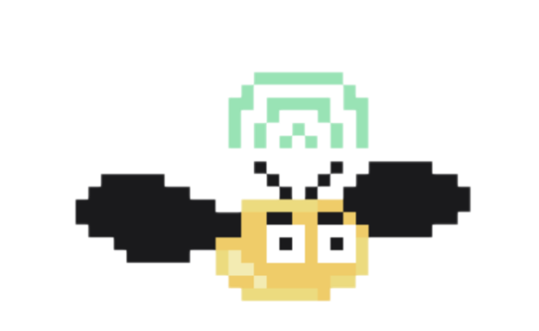

교사 연수 · 분
우리 반에 필요한
도구 만들기
1. 우리 반의 도구
당장 필요한
한 장면부터 만드세요.
필요한 부분을 크게
오늘의 학급 활동 현황
발표자 뽑기
학급 구성원 중 발표할 학생을 선택하고 발표 순서를 확인할 수 있습니다.
출석 24활동 3기록 12
누가 발표할까요?
12번발표에 집중합니다.직접 해보기
자료 둘러보기
작게 만들어,
꼭 써보세요.
